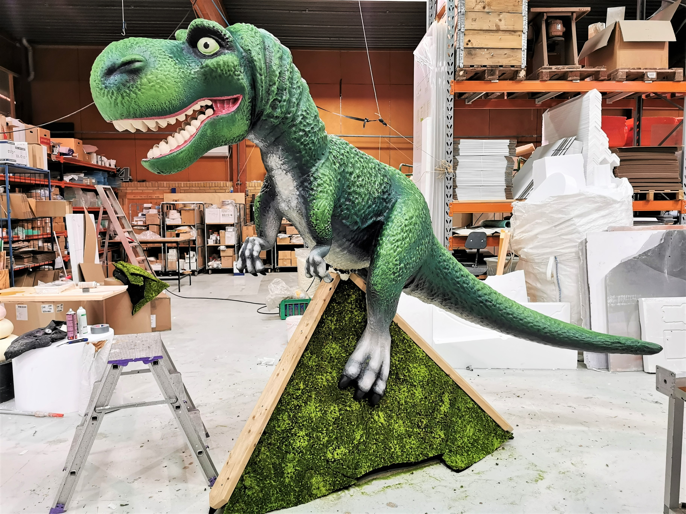
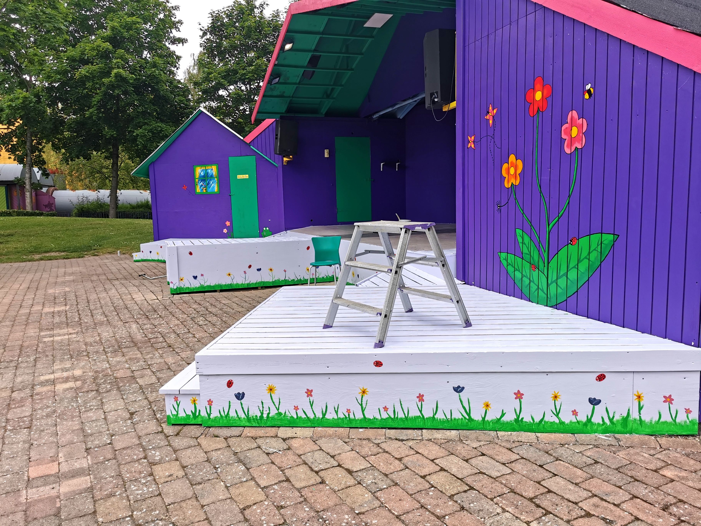

Dinoer
til legeland
Vægmalerier
til børnescene

Oasis sko til
blomsterfestival

Her er samling af større projekter jeg har lavet I forskellige sammenhænge. Her I toppen af siden kan du se en oversigt over værkerne… klik endelig på værket for at læse mere om det!ger!
Jeg har været så heldig at male disse to dinoer til BR legeland i Taastrup. Den søde triceratops kan er lavet til at børnene kan sidde på den og lege.

T-rexen er hele 2x3 meter i størrelsen, og sidder nu på toppen af et legehus!
Jeg fik æren af at pynte Bonbon Lands børnescene, med dør, vindue og blomster… og med gemte små figurer rundt omkring som børnene kan kigge på under forestillingen.
Jeg malede dør og vindue ind til "Bibbi Bonbons" hus.
Vinduet fik bagefter en blomsterkurv på med falske, farverige blomster.
Malede også en væg med blomster… og hvis du kigger efter, er der også en lille bi med kasket på ;)

Jeg fik æren af at være med til at forme og samle 3 højhælede oasis sko til Tivolis blomsterfestival. Kunstneren bag er Stine Heilmann, som senere dekorede dem smukt med blomster og mos.
Her kan se hvordan vi har limet stykker af oasis på. Inden under er der en base af metal, træ og flamingo som fyld (så den ikke bliver for tung)
På billederne kan du måske også fornemme hvor store skoene egentlig er.
Fun fact! Det blev til 3 venstresko.
Det sidste billede viser hvor i tivoli skoene skulle stå... de bliver efterfølgende pyntet.
Da jeg boede på New Zealand arbejdede jeg for en tid hos Campingpladsen Shelly Beach Top 10 Holiday Park. Her fik jeg æren af også at lave dette flotte vægmaleri til parken, som reflekterer den smukke natur I havet ved camping pladsen.

Her et billede af mig foran vægmaleriet så man bedre kan fornemme størrelsen. Lærredet er hele 2,4 x 1,4m!